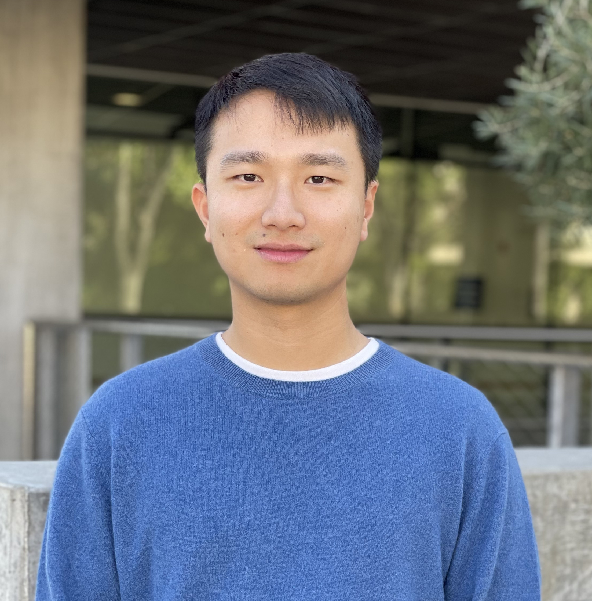
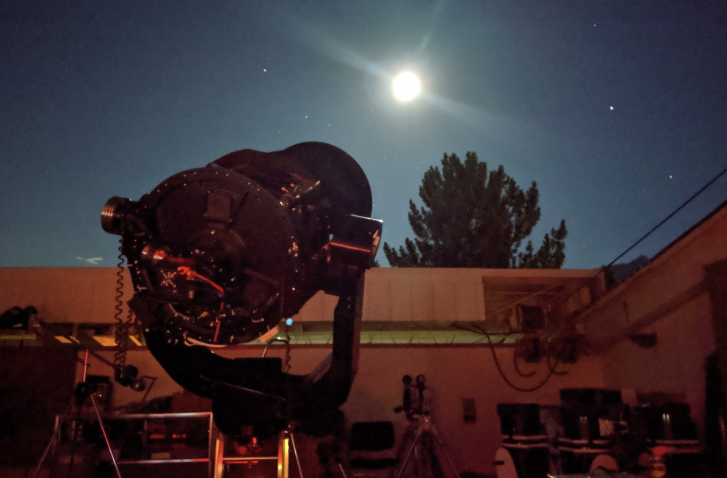

My research focuses on understanding how planetary systems form by studying the atmospheres, orbits, and spins of exoplanets. With Keck/KPIC, I led a large abundance survey of directly imaged planets and brown dwarfs and found that distant companions weighing more than 10 MJup have similar carbon and oxygen abundances as their stars, pointing to a gravitational instability origin. With JWST, I am currently pushing this survey to the core accretion regime to study how giant planets obtain their metal-rich atmospheres.
I use optical interferometry and high-resolution spectroscopy to discover and characterize tight brown dwarf binaries around stars. In 2024, I resolved the first known brown dwarf companion, Gliese 229 B, into two brown dwarfs on a 12-day orbit.
I also work on measuring the 3-D orbital architectures and dynamical masses of giant planets by combining multiple detection techniques. This led to one of the rare mutual inclination measurements between a transiting inner planet and outer giant planet. I am organizing efforts to expand studies of planetary architectures and demographics to the population level with the upcoming Gaia epoch astrometry, and extracting the maximum science from existing Gaia and Hipparcos data.
View my CV for more information.

In 2019, I worked for 6 weeks as Teaching and Residential Assistant for the Summer Science Program, where I am alumnus (2014). In the Astrophysics camp, I taught 36 students an intensive research project on asteroid orbital determination, and helped students with telescope observations and data reduction.
During college and at Caltech, I worked as TA for several physics and astronomy classes, including Observational Astrophysics, Intro to Astronomy, Advanced Intro Physics, Bayesian Statistics, and High Energy Astrophysics.
At Caltech and UCLA, I have advised several undergraduate and graduate students, including Aniket Sanghi (now graduate student). Aniket's paper on advancing reference star differential imaging was published in AJ. I've also been advising Gavin Wang (JHU) on high-resolution atmospheric retrievals. Gavin's paper using Keck/KPIC to detect 13CO was accepted to ApJ
Since 2025, I have been advising Sage Santomenna (Pomona College) on searching for new brown dwarf binaries orbiting stars using VLT/CRIRES+ spectroscopy.
I helped an undergraduate student from UIUC apply for graduate school as part of the Caltech Accountability Partners Program, Future Ignited. I also helped an graduate student from Dartmouth apply for postdoctoral fellowships as part of the AMP-UP Program.